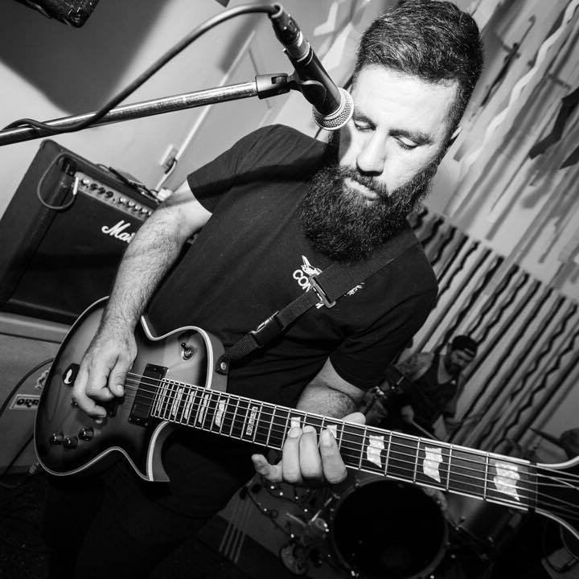
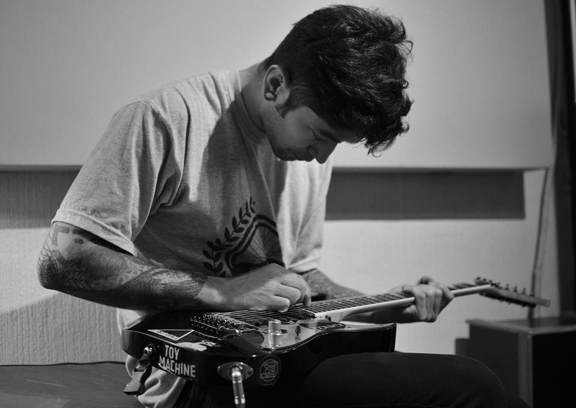
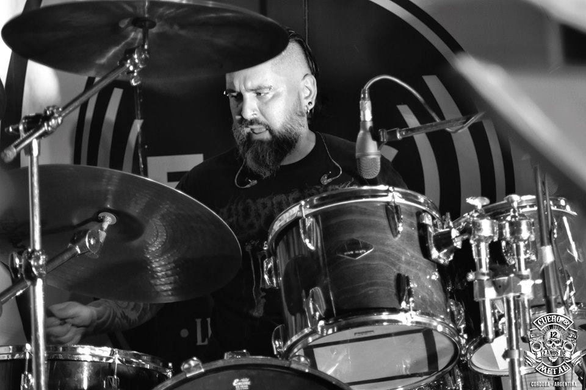

CONVOI se formó en el año 2009, en Córdoba (Argentina), cuando varios amigxs deciden reunirse después de la disolución de antiguas bandas, con la idea de proponer música dinámica dentro de varios géneros. En el año 2010 y hasta mediados del 2011, tuvieron un receso, y regresaron con un sonido diferente al que comenzó. Desde ese momento se presentaron dentro de Córdoba y Buenos Aires, participando en diferentes eventos y ganando gran aceptación del público. CONVOI Está conformado por Bruno Scotte (Batería), Pupi Plomer (Bajo), Betho Cruceño (Guitarra, Coros), Cris Salazar (Voz principal) y Fer Melian (Guitarra, Coros). La idea de CONVOI, en manera artística, siempre fue llevar la música a otros niveles dentro de los géneros hardcore, metal, rock alternativo, progresivo, pop, etc. Debido a los diferentes gustos e inclinaciones de lxs diferentes integrantes, pueden experimentar y encontrar sonidos diferentes y nuevos, que junto a las líricas expuestas, llevan a una propuesta original y auténtica. Para el año 2014 comenzó la grabación de su primer álbum homónimo, de 9 tracks. Este culmina a comienzos del 2015, teniendo el soporte de diferentes sellos nacionales y extranjeros como Revancha Distro y Black Segull Records (Brasil). Para el 2016 lanzaron su segunda producción, un EP llamado “Emerger|Desvanecer”, que contiene dos tracks. Este mismo año se dio la realización de 4 videoclips y otras presentaciones importantes, como el Belgrano Rock y Córdoba Rockea edición metal. El año 2017 se concentraron en la composición y producción de su segundo álbum “Sincretismo”, el que es lanzado a comienzos del 2018. acompañado de un tour por diferentes ciudades de Argentina. En el mismo 2018 tienen su primer presentación en el festival Cosquin Rock (Argentina), con el cual abren una nueva temporada y año de muchos proyectos, incluyendo gira internacional (Chile, Brasil, Colombia) y llevandolos a ser soporte de reconocidas bandas como A.N.I.M.A.L, entre otras.


